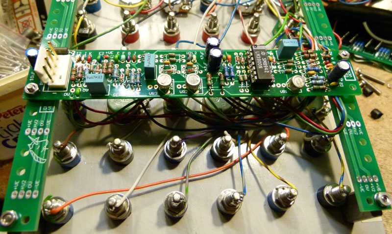
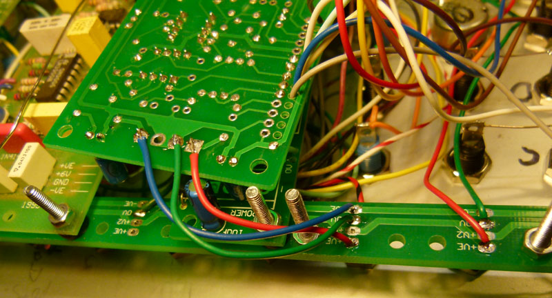
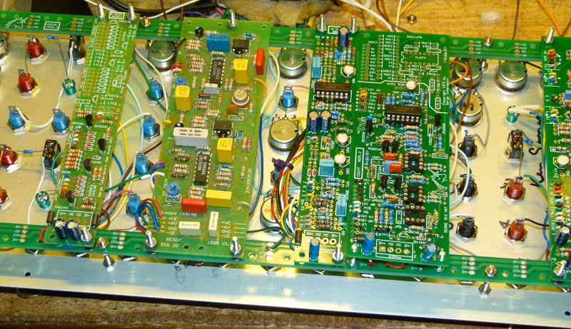

|

Pad identification:
ConstructionBefore you start assembly, check the board for etching faults. Look for any shorts between tracks, or open circuits due to over etching. Take this opportunity to sand the edges of the board if needed, removing any splinters or rough edges. Short spacers (or a couple of nuts) are needed to space the module boards off the rails so that there is space for the power wire, and so the PCB tracks on the modules are not shorted. I found 15mm M3 bolts to be adequate with the spacers I was using. The exact bolt length will depend on your choice of spacer. The corner mounting bolts and spacers need to be long enough to clear your panel mounted components.
  Wiring modules to the integral power bus. Each module on the panel is connected like this. The other ends of these wires to the rear of a module's onboard power connector. Power can now be fed to the whole panel through that board's power connector. Power connectors could be omitted from all but one PCB on the panel, although if installed, they are convenient for initial testing of the boards off-panel!
Parts list
ShippingDue to the cost of packing materials and the different shipping rates these boards will attract, shipping per order will be US$20. In other words, it will cost US$20 to ship one set or 20 sets at the same time. I suggest you buy all you will need in a single transaction to reduce your costs.
Notes:
Parts list This is a guide only. Parts needed will vary with individual constructor's needs. Parts within the boxed area can be omitted if the switched outputs are not required. Check the PCBs for Sale page to see if I have any in stock.
Can't find the parts? See the parts FAQ to see if I've already answered the question. Also see the CGS Synth discussion group.
Article, art & design copyright 2013 by Ken Stone
|